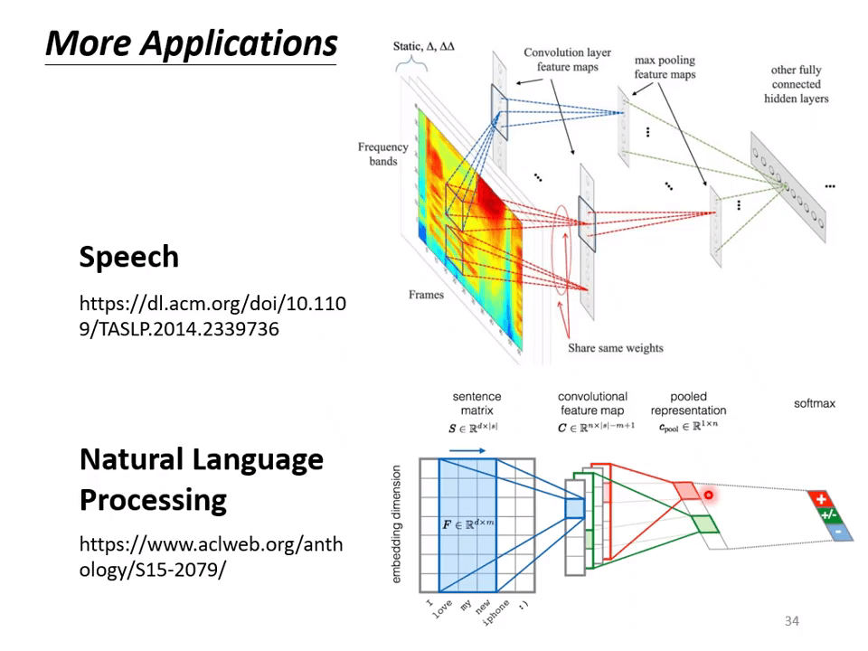
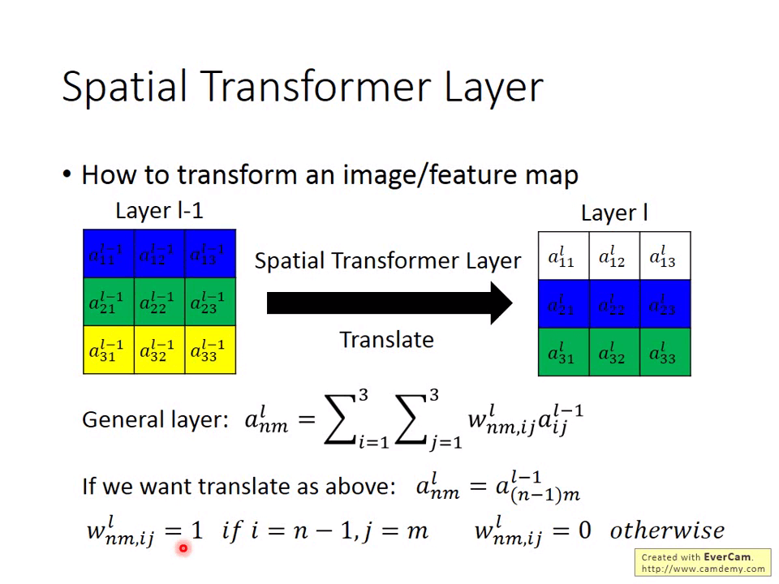

Preparation
【機器學習 2021】卷積神經網路 -Convolutional Neural Networks- CNN-
Image Classification: 给一些图像（所有图像被划分成同样的大小）经过 Model 得出预测结果 ，与实际值 之间的交叉熵损失函数为损失函数。
一张 的彩色图像是一个 3-D tensor，拥有 3 个通道。
如果简单地使用全连接层进行训练，则会有非常多的参数，容易导致过拟合。
Observation 1
卷积的解释 1：假设一张鸟类的图，把它分成一些关键的部分作为判别依据。
人类似乎也是通过观察图片的一些特点来进行图像分类！
把图片分成许多 pattern，神经网络中的一个神经元不必看到整个图像信息。
每个神经元只能看到一定的 Receptive field，Receptive field 中的 3-D tensor 乘上 weights 然后加上 bias，最后进行激活函数。
每个 receptive field 被设有多个神经元。
- receptive field 的大小叫做 kernel size
- 相邻的 receptive field 的间距叫做 stride，不同的 receptive field 可能会有重叠（一般都会有）
- receptive field 超出图像的边缘叫做 padding，会有不同的处理方式，如全部取 0，设为平均值等
所有的 receptive fields 覆盖整幅图像。
Observation 2
如不同张图片，鸟的喙（patterns）出现在两张图片不同 regions 中。
每个 receptive field 都需要一个喙探测器吗？
即使是同一个参数的神经元，由于 receptive field 中的值不同，经过神经元输出后输出值仍然不同。

每个 receptive field 被设有很多神经元。
每个 receptive field 的每个神经元被设有一样的参数。(filter 1, filter 2, filter 3, filter 4, …)
Convolutional Layer
参数共享 属于 Receptive Field 属于 全连接层。将 Receptive Field 和 Parameter Sharing 结合就是卷积层。
-
有些图案比整个图像小得多
-
相同的图案出现在不同的区域
卷积层中每个神经元就是一个 filter，每个 filter 用于探测一个小的 pattern。
经过卷积操作后会得到一定大小，“通道”数 = Filter 个数的“图像”，被称为“Feature Map”
经过 64 个 filter 后的卷积层，就会得到有 64 个“通道”的“图像”
经过卷积后的图像中的一个点就包含原始图像一个 receptive field 的某些图像特征。
Comparison of Two Stories
一些卷积操作完还要加上一定的 bias 值。
| 神经元角度 | 滤波器角度 |
|---|---|
| 每个神经元只考虑一个 receptive field | 有一组检测小图案的过滤器 |
| 具有不同 receptive field 的神经元共享参数。 | 每个过滤器对输入图像进行卷积 |
Observation 3
对图像中的像素进行 Subsampling 子采样并不会改变图像描述的物体。
池化操作——将卷积后的图像分成各个块，用一个值描述各个块。（如 Max Pooling，取各个块的最大值）

卷积和池化往往交替进行，多个卷积后进行一次池化操作等。
The whole CNN
完整的卷积神经网络：输入图像——多次卷积、池化——Flatten（将最后的矩阵转换成向量）——将所得向量作为输入进入全连接层——softmax——预测分类结果。
Application：Playing Go
不只是图像处理方面用到卷积神经网络，Alpha Go 也用到了神经网络。把围棋棋盘当作一个 的矩阵（图像），经过神经网络后得到下一个下出的点。
在 Alpha Go 中，有 48 个 channels。

-
Alpha Go 第一层中对每个坐标，都会考虑周围 范围的棋子分布情况（patterns）。
-
同样的 patterns 可能会在棋盘不同位置中（regions）。
论文中提到：
- 把棋盘看作是 大小的 Image
- 第一层中卷积层中卷积核大小是 ，stride = ，一共有 个 filters。
- 激活函数使用了 ReLU
- 第二层卷积层中卷积核大小是 ，stride = ，一共有 个 filters。
- 并没有用到 Pooling，Pooling 并不是在所有问题中都是好用的。

卷积神经网络用在语音、文字处理等，其结构并不等同于用在图像上的卷积神经网络。
卷积神经网络难以处理图像放大缩小、旋转等的问题，因此做影像辨识时往往需要 Data Augumentation。把训练集中的每张图片截出一小块放大缩小、旋转等。
Special Transformer Layer 可以直接处理这种问题。
Class Material
【機器學習 2022】為什麼用了驗證集 (validation set) 結果卻還是過擬合(overfitting)了呢？
本节课主要探讨在使用验证集后模型依然出现过拟合现象的原因。
假设你从训练集中 训练了 3 个模型 ，从验证集 得到它们的损失函数值 ，你从中找到一个 值最低的模型用到测试集上 。

使用验证集以选择模型 = 训练 ，你的模型是 。
根据之前的公式： 得到 。一般来说 不会很大，但当你的模型很复杂时，你依然会得到的较大的 从而得到的较大的 。
【機器學習 2022】魚與熊掌可以兼得的深度學習
之前论证了当 较大时会使得“理想”和”现实“差距较大。而 较小会出现“理想崩坏”。
有没有办法使得 参数量较小的情况下仍然获得较小的 值？
回顾之前的课程，我们用折线 Piecewise Linear 来拟合目标函数的曲线。
而 piecewise liear 可以看作是一个常数 constant 和多个 Hard Sigmoid 函数之和。
我们可以用 Sigmoid 函数来模拟 Hard Sigmoid 函数。
我们也可以用 ReLU 函数来模拟 Hard Sigmoid 函数。
既然只要神经元的个数够多就可以拟合任意函数，为什么要使用深度神经网络结构而不是宽度神经网络结构？
2011 年这篇论文通过实验显示了当层数越多时，错误率越低。
假设“胖矮”式神经网络与“高瘦” 式神经网络的参数量一致。
通过实验显示深度神经网络总是比宽度神经网络错误率要低。
Why we need deep？
-
是的，一层隐藏层就可以表示任何函数。
-
然而，使用深层架构更加有效。
使用逻辑电路来举例，假设有一组长度为 的输入序列，要求当输入序列中 1 的个数为偶数时输出 1，否则输出 0。
如果将异或门并联，则需要 个异或门，如果分层连接，则只需要 个异或门。
在编写程序时也要求不要把所有代码全部放入 main 函数中，而是尽可能将各个功能分层设计。
剪纸时将纸先折起来再剪比较有效率。
拟合一个 个片段的折线时，深度神经网络只需要 个神经元，更小，而宽度神经网络需要 个神经元， 更大。
深度神经网络在处理复杂且有规律的函数（如图像、语音等）时效果比宽度神经网络更好。
甚至在拟合 这种函数时也比宽度神经网络效果更好。
Extra Material
Spatial Transformer Layer
Spatial Transformer Layer
卷积神经网络并不能处理图像的缩放和旋转（可以处理平移），如果可以，则是事先在数据集中先做了这些图像变换在训练后得到的。
Spatial Transformer Layer 就是处理问题而提出。可以将不同缩放和旋转的图片变换成 CNN 可识别的图片。不仅可以变换原图像，还可以变换 feature map。

对于神经网络 NN，这个变化是通过输入 和 计算而成：。
如上图所示，要求通过 Spatial Transformer Layer 将 Layer l-1 变换成 Layer l，这是一个平移变换 。
则将 设定成：
这样就可以达成平移的目的。换句话说，如果要对图像做缩放或旋转的话，只需要对 做不同的设计就可以。
只需要对 做调整就可以达成平移（左）与旋转（右）的效果，要做到这种调整可以利用神经网络（NN）来控制。
Image Transformation
- 把一个图像扩大两倍：
- 把一个图像缩小到原来的 并平移到右上角：
逆时针旋转 个角度：
只要 6 个参数就可以描述仿射 affline 变换（由一个线性变换接上一个平移）。
最后求得的 一般不会是整数，如果使用四舍五入的方法映射到最终的 Layer l 中不可取，因为这样就无法进行梯度下降方法对模型进行优化（梯度始终为 0）。
Interpolation
使用插值法 Interpolation，我们不单纯的参考它跟距离最近的那个点 ，而是周围 4 个点的数值都参考。这样就可以使用梯度下降了。
应用
在卷积神经网络中的各个卷积层前引入 ST 层。
无论 MNIST 数据集的手写体数字被怎样地仿射变换，ST 层都可以使得手写体数字变得“正常”。
路牌数字识别中，使用 ST 层的 CNN 使得识别更有效。
鸟类识别，将矩阵 中的 和 始终设为 0，ST 层就不会考虑图像旋转的因素。